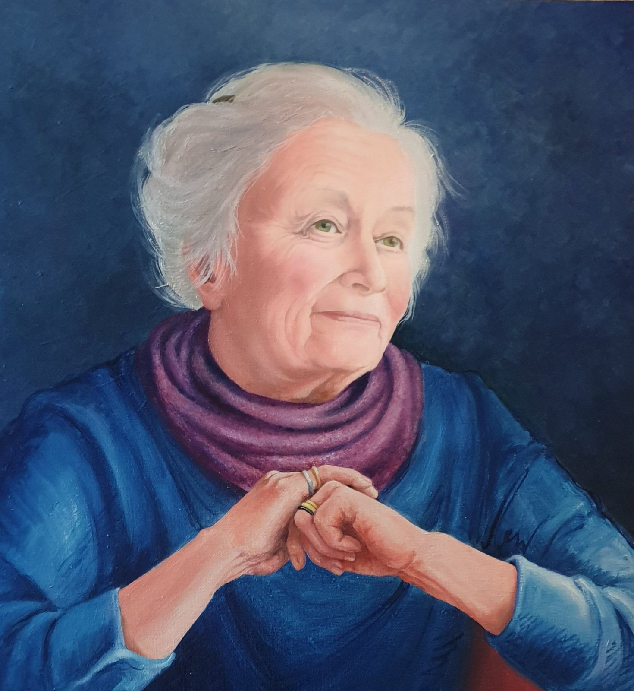

Portrait Study
- Medium
- Oil on canvas board
- Size
- 45 × 40 cm
- Year
- 2022
- Price
- Not for sale
- Catalogue no.
- 260
I enjoyed painting this portrait, as the expression on the face was one of kindness, which I think comes across well here.

I enjoyed painting this portrait, as the expression on the face was one of kindness, which I think comes across well here.